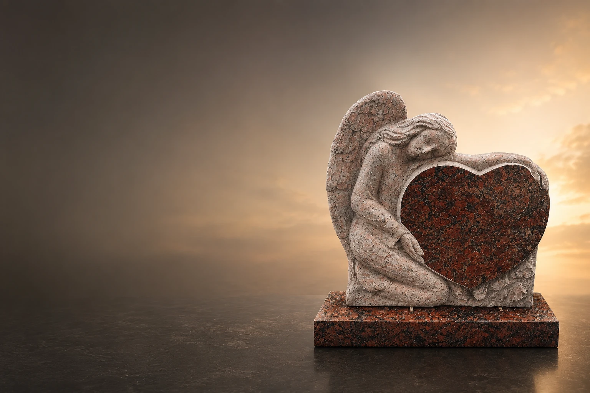

Designed around the person
The monument can be understated, modern, classic, Islamic or completely individual.
Bespoke design
Every memorial monument begins with a personal conversation. We translate memories, style preferences and practical requirements into a durable design that feels appropriate and distinctive.

The monument can be understated, modern, classic, Islamic or completely individual.
Materials and finishes are selected for appearance, maintenance and long-term outdoor use.
Engraved names, personal words, Arabic calligraphy, photographs and symbols can be integrated.
We coordinate design, material selection, production and professional installation.
Universum Soul works from Amsterdam and assists families throughout the Netherlands. We discuss the design, material, lettering and practical cemetery requirements before production. This keeps the process clear and prevents assumptions about what is included.
Questions and answers
You share your wishes, examples and budget. We then discuss suitable materials, dimensions and details.
Yes. A photograph or sketch can be used as inspiration for a technically feasible bespoke design.
Installation can be included and is confirmed clearly in the quotation.
A personal memorial
Send your ideas, a photograph or a brief description through WhatsApp. We will explain suitable options and the next steps.
Message us on WhatsApp